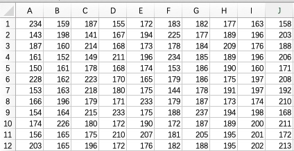
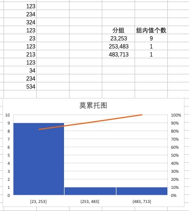
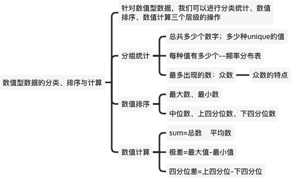

数值型数据的整理：分类、排序与计算
上节我们介绍了分类型数据的整理与可视化方法，它们也都适用于数值型数据。
但数值型数据还有一些独有的整理和可视化方法，是本节要讲的内容。
例子：原始的数据
下面数据是某电脑公司连续4个月共120天，每天的销售量数据(单位：台)： 
前面我们讲过，数据是有级别的，数值型数据>定序数据>定类数据，高级别的数据，具备低级别数据的分析方法。
因此，针对数值型数据，我们可以进行分类统计、数据排序、数值计算三个层级的操作。
首先，数值是可以分类统计的
我们看分类统计，每一个值，都可以作为一个单独的类，这种方法，也叫做“单变量值统计方法”。我们可以统计以下信息：
- 总共有多少个观测结果
- 总共有多少种unicle的结果
- 每种值出现的频率--频率分布
- 最多出现的值————众数
这种统计方法，本质上跟前面讲的品类型数据的频数统计一致的，是把每一个变量值作为一组，直接统计频率。
但这种统计方法，有很大的局限性，通常它只适合离散变量，且在变量值较少的情况下使用。我们就不展开讲了。
在连续变量或变量值较多的情况下，通常采用“分组统计方法”。它是根据统计研究的需要，将原始数据按照某种标准分成不同的组别，然后统计原始数据在不同组内的数据分布。
- 数据分组的主要目的是观察数据的分布特征。分组后的数据称为分组数据。
- 对数据的分组其实就是分类变量，数据abc属于A组，数据def属于B组。
- 数据经分组后再计算出各组中数据出现的频数，就形成了一张频数分布表。
下面我们结合具体的例子，说明组距分组的方法：
第1步：确定组数
一组数据分多少组合适呢？一般与数据自身的特点及数据的多少有关。
由于分组的目的之一是观察数据分布的特征，组数的确定应以能够显示数据的分布特征和规律为目的：组数太少，数据的分布就会过于集中；组数太多，数据的分布就会过于分散；这些都不便于观察数据分布的特征和规律。
一般情况下，一组数据所分的组数不应少于5组且不多于15组，即5-15。实际应用时，可根据数据的多少和特点及分析的要求来确定组数。
本例中由于数据较多，可分为10组。
第2步：确定各组的组距
在组距分组中，一个组的最小值称为下限；一个组的最大值称为上限；一个组的上限与下限的差称为组距。
根据分组结果，各组组距是否相等，可分为“等距分组”和“不等距分组”
- 在组距分组时，如果各组的组距相等，则称为等距分组
- 如果各组的组距不相等，则称为不等距分组
等距分组方法的组距，可根据全部数据的最大值和最小值及所分的组数来确定，即组距＝（最大值－最小值)/组数。例如，对于案例数据，最大值为237, 最小值为141,组数建议为10组。则组距＝（237—141)/10 = 9.6。为便于计算，组距宜取5或10的倍数，而且第一组的下限应低于最小变量值，最后一组的上限应高于最大变量值，因此组距可取10。
不等距分组方法的组距，是针对某些特殊现象或为了特定研究的需要，人为设定的。比如，对人口年龄的分组，可根据人口成长的生理特点分成0~6岁（婴幼儿组）、7~17岁（少年儿童组）、18~59岁（中青年组）、60岁及以上（老年组）等。
采用组距分组时，需要遵循不重不漏的原则：(1)不重是指一项数据只能分在其中的某一组，不能在其他组中重复出现；(2)不漏是指组别能够穷尽，即在所分的全部组别中每项数据都能分在其中的某一组，不能遗漏。
为了解决不重的问题，我们要格外注意分组的“衔接处”：
- 第一种是“左开右闭”，即“上组限不在组内”，用数学语言来表示就是分组后的变量值x满足a≤x<b。统计学和计算机领域比较常用这种规则。因为人们的习惯通常都是从左向右读数据，所以两者相比之下左闭右开更自然。
- 第二种是“左闭右开”，Excel自动分组方法，生成的分组，会是左闭右开的。
在组距分组中，如果全部数据中的最大值和最小值与其他数据相差悬殊，为避免出现空白组（即没有变最值的组）或个别极端值被漏掉，第一组和最后一组可以采取“XX以下”及“XX以上“这样的开口组。开口组通常以相邻组的组距作为其组距。例如，在上面的120个数据中，假定将最小值改为 102,最大值改为265,采用上面的分组就会出现空白组，这时可采用开口组。
数值型数据分了组，也是有顺序的分类表量。为了统计分析的需要，有时需要观察某一数值以下或某一数值以上的频数或频率之和，这时可以计算出累积频数或累积频率。如下案例所示：

使用Excel中的FREQUENCY函数也可以创建频数分布表，具体步骤是：
- 选择与接受区域相邻近的单元格区域，作为频数分布表输出的区域
- 选择统计函数中的FREQUENCY函数
- 在对话框Date-array后输入数据区域，在Bins-array后输入接受区域
- 同时按下Ctrl-Shift-Emer组合键，即得到频数分布表
然后，数值是可以排序的
除了对一组数据进行分组，我们还可以对这组数据进行排序；然后看看算出这组数据的「最大值、最小值、中位数、上四分位数、下四分位数」这五个特殊的值：
- 最大值：一组数据的最大值
- 最小值：一组数据的最小值
- 中位数：中位数是一组数据排序后处于中间位置上的变量值，用$M_0$表示
- 上四分位数：一组数据排序后处在数据25%位置上的值，用$Q_U$表示上四分位数
- 下四分位数：一组数据排序后处在数据75％位置上的值，用$Q_L$表示下四分位数
在开头案例中的数据，最大值＝237;最小值＝141;中位数＝182;下四分位数＝25;上四分位数＝197。
值得强调的是，当我们中位数代表一组数据时，有一个必要的假定条件，即数据在本组内呈均匀分布或在中位数两侧呈对称分布。如果实际数据的分布不符合这一假定，用中位数作为一组数据的代表值会有一定的误差。
最后，数值是可以被计算的
对于一组数据，其包含多个不同的数字，是可以放到一起进行数学运算的。比如，我们可以：
- 计算这些数据的总和：Sum
- 计算这些数据的平均数：算数平均数、加权平均数、几何平均数
- 计算最大值与最小值的差：极差
- 计算上四分位值与下四分位值的差：四分位差
- 计算这些数据的方差、标准差：方差、标准差
关于这些值的性质与意义，我们后文再讲。
总结
本文内容，总结如下：

参考文献：
- 孙静娟主编.《统计学》.清华大学出版社.2015：18-20.
- 袁卫,刘超.《统计学--思想、方法与应用》(第二版).中国人民大学出版社.2011.
- 贾俊平,何晓群,金勇进.《统计学》(第七版).中国人民大学出版社.2018.